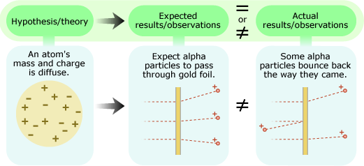
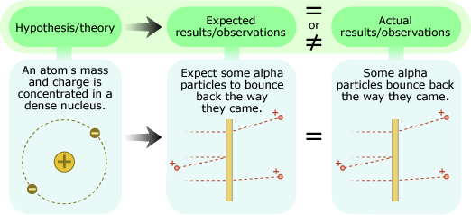

Though the structure of a scientific argument may seem straightforward — a hypothesis generates expectations which then may or may not be observed — assembling those pieces may take a lot of work. Substantial analysis and background knowledge are often involved in figuring out what expectations are generated by a particular hypothesis or theory. And it might take even more work (e.g., the development of a new tool, like a Geiger counter) and time (e.g., waiting for the next magnitude 6.0 earthquake) to gather the observations relevant to an idea.
For example, consider the hypothesis that an atom's mass and positive charge are spread diffusely throughout the atom. The idea is simple enough, but unless you happen to know a lot about particle physics and electromagnetism, the expectations that it generates are not immediately obvious. Those bodies of knowledge suggest that if this idea were true, then tiny, positively charged alpha particles should be able to pass right through a gold atom without much deflection. Again, this expectation sounds simple enough, but actually setting up the experiment to validate it is tough: you need a means of producing alpha particles, a way to shoot them through gold foil, and a method for detecting their deflection. Only then would you be able to get the observations relevant to your hypothesis. In the early 1900s, Ernest Rutherford and his colleagues performed this experiment and found that their expectations and actual observations did not match at all: some of the alpha particles came bouncing back the way they came, as though they'd bumped into something solid!
The results did not support the diffuse mass hypothesis. However, they did suggest another hypothesis to Rutherford — that atoms have a dense, positively-charged nucleus — and helped him construct a new scientific argument:
Rutherford's actual observations helped him create a new scientific argument Rutherford's tests aimed to reveal the inner structure of atoms — entities that surround us all the time. But scientific tests also allow us to learn about entities like the dinosaurs or the atoms produced by the Big Bang, which no longer exist today …